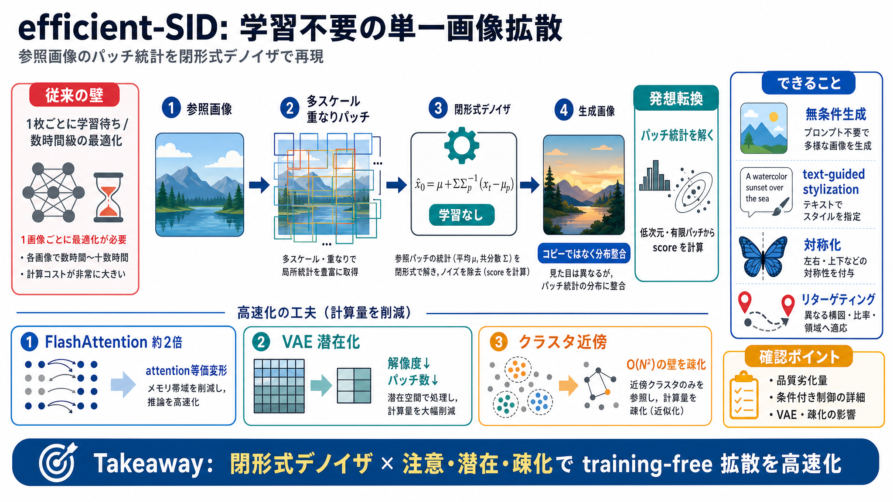

CVPR 2026 Open Access Repository
These CVPR 2026 papers are the Open Access versions, provided by the Computer Vision Foundation. Except for the watermar…

参照画像の「質感・構造の統計（パッチ分布）」を、training-freeで拡散生成に再現します。
さらにメガピクセル級を秒未満、ギガピクセル級を数分に近づけるため、計算ボトルネックを複数方向で抑えます。
単一画像拡散は通常、拡散ネットのニューラル学習を回す必要があり、最適化に数時間級のコストがかかります。
画像全体を作るのではなく、参照画像を重なりパッチ群として扱い、その有限データから必要なスコアを“閉形式”で計算します。
パッチ集合から、拡散で必要な“スコア（ノイズからクリーンを推定する量）”を閉形式デノイザとして導出し、ニューラルネット学習を排除します。
高速化の中心は、パッチ間の相互作用が生む二乗級の計算を、近似ではなく“実装上の工夫”で抑えることです。
閉形式デノイザを scaled dot-product attention に等価変形し、FlashAttention を使って高速化します（約2倍）。
事前学習済み VAE を利用し空間解像度を落としてパッチ数を減らすことで、二乗項の計算を激減させます。
| 要素 | 効果 | なぜ速い |
|---|---|---|
| 解像度ダウン（潜在空間） | パッチ数を大幅に減少 | 相互作用計算（約二乗）の対象が減る |
| 事前学習済みVAE | 追加学習なしで導入 | training-freeの主張を維持しつつ軽量化 |
パッチをクラスタリングし、近傍クラスタのみを参照することで、遠いパッチ寄与を無視して計算量を O(N²)から改善します。
参照画像をそのまま参照するのではなく、ノイズからデノイズして重なりパッチを再構成し、統計として整合する生成を狙います。
無条件生成だけでなく、テキストガイド（text-guided stylization）、画像の対称化、リターゲティング（アスペクト比変更）などへ対応できるとされています。
強みは、学習不要で拡散の“肝”を閉形式に置き換え、FlashAttention・VAE・疎化で実用速度を狙う設計です。
efficient-SIDは、単一画像拡散を「パッチ空間の閉形式解」と「注意・潜在・疎化の高速化」で置き換え、品質と速度の両立を狙います。
These CVPR 2026 papers are the Open Access versions, provided by the Computer Vision Foundation. Except for the watermar…
| 15 | [**Monet: Reasoning in Latent Visual Space Beyond Image and Language**](https://www.paperdigest.org/paper/?paper_…
In this paper, we propose a latent patch diffusion model for unconditional image generation that utilizes neighboring ov…
### A Style is Worth One Code: Unlocking Code-to-Style Image Generation with Discrete Style Space. ### Black-box Members…
[Papers _With Code_](https://paperswithcode.co/)[Trending](https://paperswithcode.co/)[Browse state-of-the-art](https://…